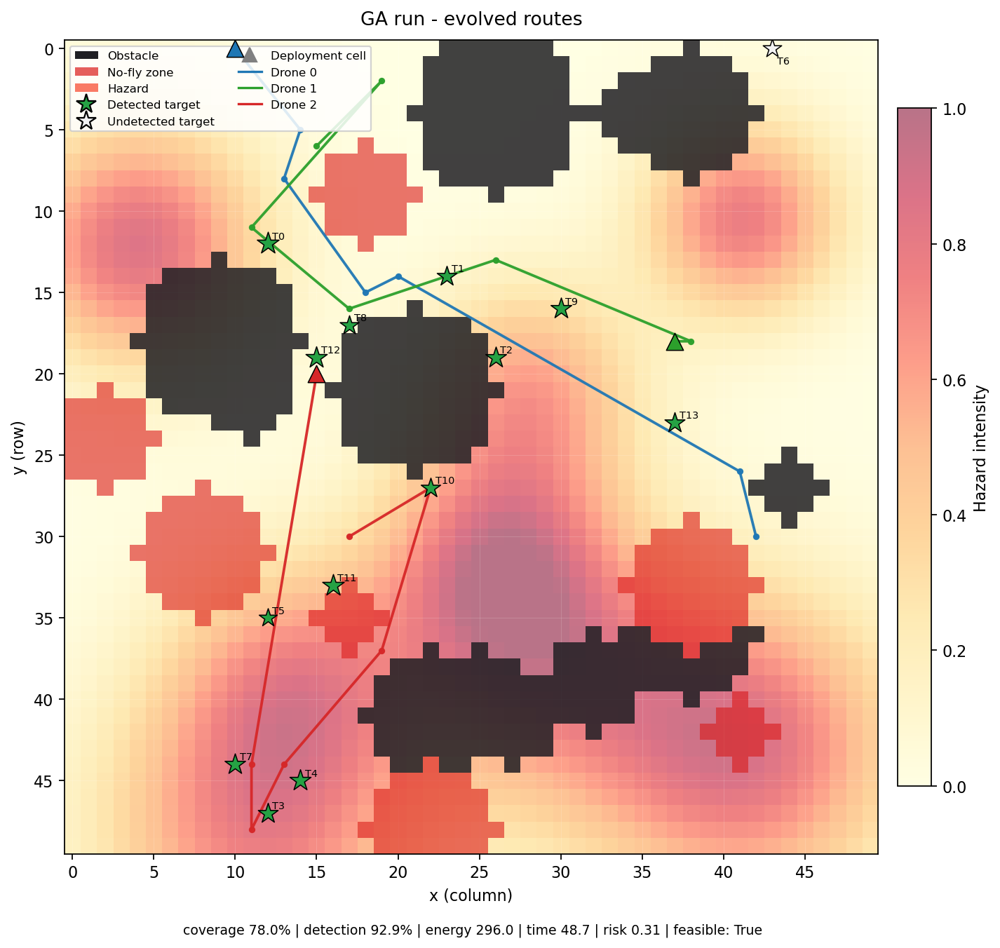
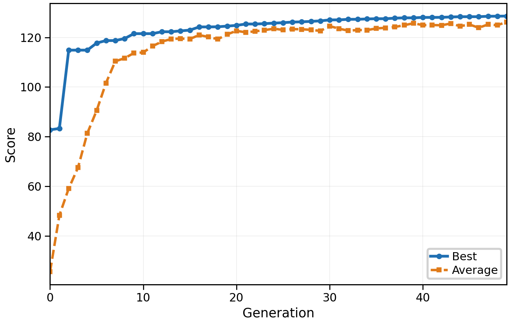
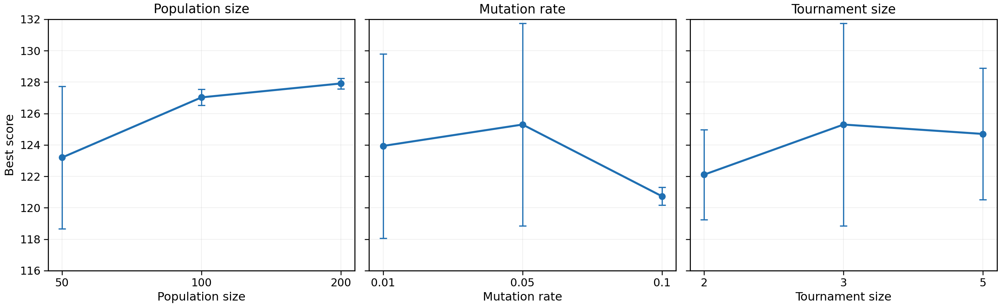

This assignment asks for a strategy engine that plans routes for three drones over a 50 × 50 disaster grid. Each drone must visit waypoints, choose a speed and a sensor power, and avoid obstacles, no-fly zones and dangerous cells. We use a genetic algorithm (GA) because it can search many possible routes and handle several goals at the same time. A chromosome stores every waypoint, speed and sensor choice. A simulator flies the route and gives it a score based on priority-weighted target coverage, target detection, energy, time and risk. We compare the GA with random search using the same number of trials. Over three seeds, the GA scored 119.1 ± 6.9 on average, while random search scored 89.6 ± 15.9. The best GA run detected all 14 targets. This report explains the design, tests the main parameters, and discusses why the final route is one of many good answers rather than a single correct one.


After a disaster, a small drone team must inspect the affected area quickly. Some cells are blocked, some are unsafe, and some targets are more important than others. The team also has limited battery and flight time. A good plan must balance all of these goals, so there is no single correct route.
This report presents a simple and reproducible strategy engine. Section 2 explains how a route is stored and scored. Section 3 gives the experiment setup. Section 4 compares the GA with random search, and Section 5 tests the population size, mutation rate and selection pressure. Section 6 discusses the result and its limits.
One chromosome describes the whole fleet. It has three blocks, one per drone. Each block stores six waypoints. A waypoint is a pair of whole-number grid coordinates (x, y), a speed level (0 = slow, 1 = normal, 2 = fast) and a sensor level (0 = off, 1 = medium, 2 = strong). The drone starts at its base and visits the waypoints in order. The speed and sensor values of a waypoint apply to the leg that leads to it.
We chose this hybrid design for two reasons. First, grid coordinates are easy to check and repair. Second, speed and sensor choices are naturally discrete. Keeping one block per drone also makes crossover simple, because a child can take a complete route from each parent without mixing two drones together.
The score rewards coverage (C) and target detection (D), and punishes energy (E), time (T) and risk (R). Each term is scaled between 0 and 1, so the weights show their relative importance:
C is the share of target priority that the drones detect, and D is the share of the 14 targets they detect. E is total energy divided by the fleet limit (780), T is the longest drone flight time divided by the time limit (120), and R is the average hazard level on the cells that were flown over. P is a penalty for a route that breaks a hard constraint.
Coverage has the largest reward (+100) because reaching high-priority targets is the main task. Detection is next (+50) so that the plan is also rewarded for finding each target. Risk has the largest punishment (−30) because flying through fire or radiation is dangerous. Energy (−20) and time (−15) have smaller weights because the hard limits already reject routes that run out of battery or take too long; these weights only prefer safer margins among valid routes.
Selection uses a tournament of three routes: pick three at random and keep the best. Crossover takes two parents and swaps the last part of one drone's block, which keeps the route structure valid. Mutation visits each waypoint with probability 0.05 and then moves the waypoint, changes its speed, or changes its sensor. The two best valid routes are copied to the next generation unchanged.
A repair step runs before scoring. It pulls waypoints back inside the grid, moves them out of obstacles and no-fly cells, and repairs a leg that crosses a blocked cell. If repair cannot fix the route, the penalty P is added. The penalty is 1000 plus 50 for each violation and 25 for each unit of violation, so an invalid route cannot beat a valid one. The GA stops after 50 generations.
The simulation uses a 50 × 50 grid, 3 drones, 6 waypoints per drone and 14 targets. The GA uses 60 routes per generation for 50 generations, which gives 3,000 evaluations with caching. Random search also receives 3,000 evaluations. Both methods use the same simulator and score function. We repeat each method for seeds 42, 43 and 44 to reduce the effect of luck.
| Method | Score | Coverage | Targets | Energy | Time | Risk |
|---|---|---|---|---|---|---|
| Genetic algorithm | 119.1 ± 6.9 | 92.8% | 13.0 / 14 | 253.2 | 62.3 | 0.189 |
| Random search | 89.6 ± 15.9 | 77.2% | 11.0 / 14 | 356.3 | 77.8 | 0.289 |
Score is the fitness from Equation 1. Coverage is the share of target priority detected. Targets is the average number found out of 14. Risk is the average hazard level (0–1).
Table 1 shows that the GA is better on every measure. Its average score is 119.1, which is about 33% higher than the random-search score of 89.6. It covers 15.6 more percentage points of priority-weighted targets and finds two more targets on average. It also uses about 29% less energy and 20% less flight time, and its risk is lower (0.189 versus 0.289).
The GA is also more reliable. Its score changes by 6.9 points between seeds, while random search changes by 15.9 points. Random search depends heavily on luck: its best run scored 105.6, which is still below the GA average, and its worst run scored only 73.9. The best GA run reached 128.6, detected all 14 targets and achieved 100% priority-weighted coverage. That run used a larger population and 5,000 evaluations, so it is reported as the best result rather than as part of the equal-budget table.
We tested one parameter at a time with two seeds and 30 generations. The results are shown in Figure 2. A population of 50 scored 123.2, a population of 100 scored 127.0, and a population of 200 scored 127.9. The two larger populations covered 100% of priority-weighted targets, but 200 needed about twice the run time of 100, so 100 is the best balance.
For mutation, 0.01 scored 123.9, 0.05 scored 125.3 and 0.1 scored 120.7. A rate of 0.05 works best: very small changes explore too slowly, while large changes break good routes. For tournament size, 2 scored 122.1, 3 scored 125.3 and 5 scored 124.7. Size 3 gives enough selection pressure without losing diversity too quickly.

The final route is not unique. Different seeds produced different routes with scores between 111.2 and 123.9, and all of them were valid. This is expected: many routes can visit the same targets in a different order. The GA therefore gives the team a set of good options, not one fixed answer. A human planner could choose a route that also avoids a school or a hospital, even if another route has a slightly higher score.
Random search is simpler, but most random routes are poor. The GA reuses good parts of routes through selection and crossover, so it improves faster with the same number of trials. In this experiment, the GA won on score, coverage, detection, energy, time and risk.
The main limitation is that the map is simulated. The drones do not face wind, moving hazards or loss of communication, and the score weights are a design choice. A real system should test more seeds, use live map data and let a human check the final plan.
This project built a complete GA strategy engine for a three-drone disaster mission. The chromosome stores waypoints, speed and sensor choices; the score balances coverage, detection, energy, time and risk; and repair keeps routes valid. The GA beat random search with the same budget, and the best run found every target with full priority-weighted coverage. The result is one of several good routes, which is the right outcome for a problem with competing goals.
[1] Artificial Intelligence, Assignment 2 brief. Department of Computer Science, Bahria University Lahore Campus, 2026.
[2] D. E. Goldberg, Genetic Algorithms in Search, Optimization, and Machine Learning. Addison-Wesley, 1989.
[3] S. Russell and P. Norvig, Artificial Intelligence: A Modern Approach, 4th ed. Pearson, 2021.
[4] T. Mehmood, “uav-strategy-engine,” GitHub repository, 2026. https://github.com/ChTayyabMehmood/uav-strategy-engine